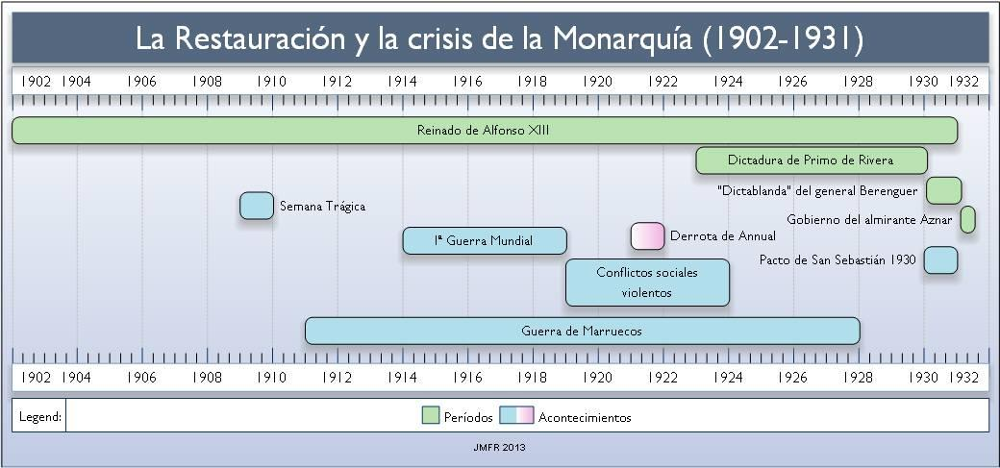
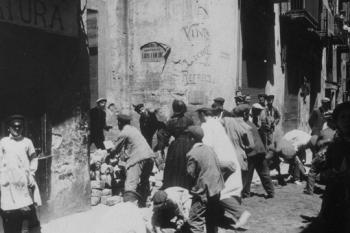
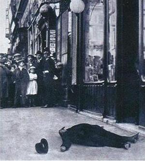
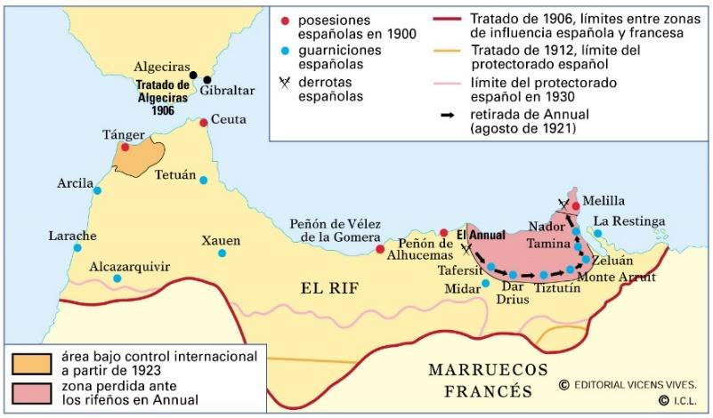
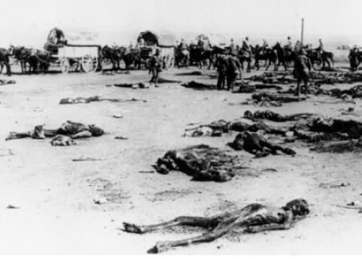

Tema 1: El Reinado de Alfonso XIII y la Crisis de la Restauración (1902 - 1923)

Imagen: Esquema conceptual y mapa mental de síntesis didáctica sobre las causas, fases gubernamentales, principales realizaciones económicas y el desarrollo de la oposición durante la Dictadura de Miguel Primo de RiveraLa quiebra del sistema canovista, las tensiones sociales y coloniales, y el colapso definitivo del parlamentarismo de la Restauración.
 Imagen: Carroza real de Alfonso XIII y Victoria Eugenia de Battenberg en el día de su boda en 1906, instantes antes del atentado de la calle Mayor
Imagen: Carroza real de Alfonso XIII y Victoria Eugenia de Battenberg en el día de su boda en 1906, instantes antes del atentado de la calle Mayor
1. El Reinado de Alfonso XIII y los Primeros Problemas (1902 - 1909)
La mayoría de edad de Alfonso XIII en 1902 marcó el inicio de la segunda etapa de la Restauración. Hasta 1923, España vivió en una permanente inestabilidad política que afectó gravemente a los cimientos del régimen. Las causas de este deterioro fueron múltiples:
- La personalidad del monarca: A diferencia de su padre, Alfonso XIII tuvo un papel muy activo e intervencionista en las decisiones de gobierno y en la caída de ministerios. Además, se rodeó de los sectores más conservadores del generalato, lo que desacreditó la neutralidad de la Corona.
- La división interna de los partidos dinásticos: El asesinato de Cánovas en 1897 y la muerte de Sagasta en 1903 dejaron a los partidos Conservador y Liberal sin líderes claros, abriendo luchas por el poder entre políticos como Maura, Dato, Canalejas o el conde de Romanones.
- Debilitamiento del caciquismo: El crecimiento de las ciudades y la movilización del voto obrero restaron influencia al fraude electoral en los núcleos urbanos, donde la corrupción electoral era muy difícil de practicar. Desde 1917, ningún partido obtuvo mayorías para gobernar solo, obligando a recurrir a débiles gobiernos de concentración.
- El auge de la oposición: El republicanismo, el obrerismo (UGT y CNT) y los nacionalismos catalán y vasco aumentaron de forma espectacular su base social y sus éxitos electorales, cuestionando la validez del sistema de turno.
⚠️ El Choque Civil-Militar y la Ley de Jurisdicciones
El descontento militar por la humillación del Desastre del 98 derivó en tensiones con los civiles y la prensa de la periferia. En noviembre de 1905, un grupo de unos 300 oficiales del ejército asaltó las redacciones de la revista satírica catalanista Cu-Cut! y del periódico La Veu de Catalunya por publicar una caricatura ofensiva para los militares.
En lugar de castigar el asalto, el gobierno claudicó ante los militares aprobando la polémica Ley de Jurisdicciones (1906), que consideraba los delitos e injurias contra el honor del Ejército o de la Patria como delitos penales juzgados de forma sumaria por tribunales militares.
¿Quieres analizar en profundidad la evolución del sistema y el auge del descontento en el reinado de Alfonso XIII?
🎬 Vídeo complementario: Ver documental interactivo de la Crisis de la Restauración (1902-1931) ➡️2. Antonio Maura y la Semana Trágica de Barcelona (1909)
A partir de 1907, el conservador Antonio Maura lideró un intento de reforma interna del sistema conocido como la revolución desde arriba. Maura defendía que el régimen debía modernizarse desde el propio Gobierno para impedir que fuera arrasado por una revolución popular.
Para ello, impulsó una nueva base social de masas neutras, aprobó leyes sociales como el descanso dominical o la creación del Instituto Nacional de Previsión (1908), y promovió un acercamiento al nacionalismo moderado catalán. Sin embargo, su Ley Electoral de 1907, que introdujo el voto obligatorio y el controvertido Artículo 29 (por el cual se proclamaba automáticamente diputado al único candidato presentado), terminó consagrando y facilitando la corrupción caciquil.

Imagen: Barricadas levantadas por los amotinados en el Paralelo de Barcelona durante la Semana Trágica de julio de 1909La caída definitiva del gobierno de Maura se produjo a raíz de la Semana Trágica de Barcelona en julio de 1909. Tras un fuerte ataque de las cabilas rifeñas en el Barranco del Lobo (Marruecos) que causó más de 1.200 bajas españolas, Maura decretó la movilización de reservistas en Madrid y Barcelona. El injusto sistema de reclutamiento (que eximía a los ricos a cambio de pagar un canon) provocó un violento estallido popular en Barcelona.
La huelga general iniciada el 26 de julio derivó en una insurrección incontrolada. Se levantaron barricadas, se asaltaron armerías y se incendiaron más de sesenta iglesias y conventos, espoleados por un arraigado sentimiento anticlerical y antimilitarista.
🩸 Represión y Caída: El Grito de "¡Maura No!"
La represión militar fue brutal, con más de 150 civiles fallecidos y más de 1.700 encarcelamientos. Se celebraron consejos de guerra masivos y se dictaron ejecuciones, de las cuales la más controvertida fue la del pedagogo librepensador y anarquista Francisco Ferrer i Guàrdia, fundador de la Escuela Moderna, ejecutado en los fosos del Castillo de Montjuïc sin pruebas de su implicación en la revuelta.
La indignación internacional obligó a Alfonso XIII a retirar su confianza a Maura, propiciando su dimisión en octubre de 1909 bajo una clamorosa campaña nacional de la izquierda bajo el grito de "¡Maura no!".
3. José Canalejas y el Regeneracionismo Liberal (1910 - 1912)
En 1910, los liberales llegaron al poder bajo la presidencia de José Canalejas, quien lideró el esfuerzo más coherente de democratización e intervencionismo social de la Restauración para ganarse el apoyo de las clases populares. Entre sus medidas de mayor trascendencia destacan:
- La Ley del Candado (1910): Medida que limitaba temporalmente la instalación de nuevas órdenes religiosas en España, buscando aplacar el fuerte debate anticlerical.
- Justicia fiscal: Abolió el impopular impuesto de consumos (que gravaba los productos de primera necesidad) y lo sustituyó por un impuesto progresivo sobre la renta, ganándose la oposición de las clases adineradas.
- Servicio militar verdaderamente obligatorio: Suprimió la posibilidad de eludir el alistamiento militar a cambio del pago directo de dinero al Estado, instaurando una cuota de reducción temporal pero acabando con el privilegio absoluto de los hijos de la alta burguesía.
- Descentralización territorial: Promovió la Ley de Mancomunidades, que permitía agrupar las diputaciones provinciales para responder a las demandas autonómicas catalanistas (aprobada finalmente en 1913 bajo la regencia del conde de Romanones).

Imagen: Grabado satírico de época que representa el asesinato de José Canalejas a manos de un anarquista frente a la librería San Martín en la Puerta del Sol de Madrid (1912)El esfuerzo reformista regeneracionista del ala liberal de la Restauración se truncó de forma abrupta el 12 de noviembre de 1912, cuando Canalejas fue asesinado en la madrileña Puerta del Sol por los disparos del anarquista Manuel Pardiñas, abriendo una nueva brecha de inestabilidad.
4. La Primera Guerra Mundial y la Triple Crisis de 1917
Con el inicio de la Primera Guerra Mundial en 1914, el gabinete conservador de Eduardo Dato declaró la estricta neutralidad de España, una decisión justificada por la fragilidad diplomática y militar de la nación. Esta neutralidad generó un inmenso boom de exportaciones agrícolas e industriales a las potencias en guerra.
Las reservas de oro se triplicaron y los beneficios industriales de la burguesía catalana y vasca se dispararon. Sin embargo, este crecimiento creó una profunda desigualdad social. Las exportaciones masivas encarecieron los recursos internos y desataron una inflación descontrolada. Los salarios reales bajaron, provocando un empobrecimiento sistemático de las clases populares urbanas y rurales.
⚡ El Estallido Sincrónico: Las Tres Crisis
En el verano de 1917, coincidiendo con la agitación de la Revolución Rusa, confluyeron tres revoluciones en cadena que pusieron en jaque al Estado:
- La Crisis Militar (Juntas de Defensa): Oficiales peninsulares de escalas medias formaron sindicatos militares ilegales (Juntas de Defensa) demandando mejoras salariales y oponiéndose a los ascensos por méritos de guerra reservados a los militares africanistas. Eduardo Dato claudicó aprobando la Ley del Ejército en 1918 para asegurar la lealtad militar.
- La Crisis Política (Asamblea de Parlamentarios): Ante el cierre de las Cortes decretado por Dato, diputados de la oposición se reunieron en Barcelona en una Asamblea de Parlamentarios exigiendo un Gobierno provisional de concentración, autonomía para Cataluña y una nueva Constitución democrática. La asamblea fue disuelta por la Guardia Civil.
- La Crisis Obrera (Huelga General Revolucionaria): Convocada conjuntamente por UGT y CNT en agosto de 1917 para derrocar la monarquía y proclamar una República democrática. El paro paralizó las cuencas mineras y los ensanches industriales.
5. El Colapso del Turno y el Desastre de Annual (1918 - 1923)

Imagen: Mapa del Protectorado Español de Marruecos, delimitando las zonas de soberanía franco-española e indicando la accidentada geografía del Rif, escenario clave del Barranco del Lobo (1909) y de la posterior catástrofe de Annual (1921)Tras la crisis de 1917, el sistema bipartidista quedó desarticulado. Se intentaron formar gobiernos de concentración, como el Gobierno Nacional de Maura en 1918 (en el que participaron liberales, conservadores y regionalistas catalanes de la Lliga), pero el choque entre partidos impidió cualquier avance reformista. Entre 1918 y 1923, España conoció 10 cambios de gobierno de apenas cuatro meses de duración media.
A la inestabilidad institucional se sumó una auténtica escalada de violencia social:
- La huelga de La Canadiense (1919): Liderada por la CNT, la huelga en la empresa eléctrica paralizó Barcelona durante 44 días. Fue un éxito histórico que forzó al gobierno a decretar la jornada laboral máxima de ocho horas en todo el país. La patronal catalana reaccionó con cierres de fábricas (lock-out) y financió el pistolerismo de los Sindicatos Libres para asesinar a los líderes obreros. Las autoridades respondieron aplicando la sangrienta Ley de Fugas, que permitía disparar impunemente a los detenidos bajo pretexto de intento de fuga.
- El Trienio Bolchevique andaluz (1918-1921): El hambre y el impacto de la revolución soviética llevaron a constantes levantamientos anarquistas en los campos de Andalucía, con asaltos a fincas y huelgas agrarias reprimidas militarmente.

Imagen: Restos de los campamentos militares españoles insepultos en el Rif tras el desastroso Desastre de Annual de 1921El colapso definitivo del sistema llegó en el norte de África. En julio de 1921, el avance imprudente de las tropas españolas en el Rif, dirigido por el general Fernández Silvestre, acabó en el catastrófico Desastre de Annual. Las cabilas rifeñas dirigidas por Abd-el-Krim cercaron y masacraron a más de 12.000 soldados españoles.
La indignación popular sacudió los cimientos del país. En las Cortes se abrió una comisión de investigación parlamentaria que dio origen al Expediente Picasso, redactado por el general Juan Picasso. El expediente destapó una escandalosa trama de corrupción en el generalato e ineficacia en el ejército, apuntando la culpabilidad moral directa del propio monarca Alfonso XIII. Para evitar la votación de este expediente, el capitán general de Cataluña dio un golpe de Estado en septiembre de 1923.